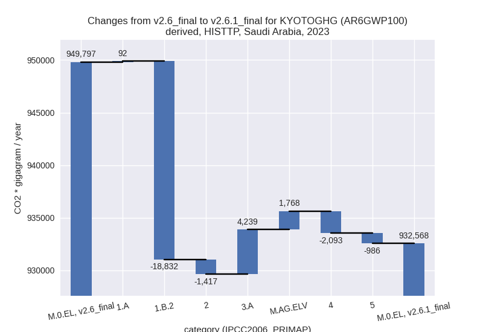

Changes in PRIMAP-hist v2.6.1_final compared to v2.6_final for Saudi Arabia
2025-03-19
Johannes Gütschow
Change analysis for Saudi Arabia for PRIMAP-hist v2.6.1_final compared to v2.6_final
Overview over emissions by sector and gas
The following figures show the aggregate national total emissions excluding LULUCF AR6GWP100 for the country reported priority scenario. The dotted linesshow the v2.6_final data.
The following figures show the aggregate national total emissions excluding LULUCF AR6GWP100 for the third party priority scenario. The dotted linesshow the v2.6_final data.
Overview over changes
In the country reported priority scenario we have the following changes for aggregate Kyoto GHG and national total emissions excluding LULUCF (M.0.EL):
- Emissions in 2023 have changed by 0.9%% (6454.54 Gg CO2 / year)
- Emissions in 1990-2023 have changed by 0.0%% (182.07 Gg CO2 / year)
In the third party priority scenario we have the following changes for aggregate Kyoto GHG and national total emissions excluding LULUCF (M.0.EL):
- Emissions in 2023 have changed by -1.8%% (-17228.49 Gg CO2 / year)
- Emissions in 1990-2023 have changed by -1.6%% (-9880.70 Gg CO2 / year)
Most important changes per scenario and time frame
In the country reported priority scenario the following sector-gas combinations have the highest absolute impact on national total KyotoGHG (AR6GWP100) emissions in 2023 (top 5):
- 1: 3.A, CH4 with 4833.28 Gg CO2 / year (102.2%)
- 2: M.AG.ELV, N2O with 3551.37 Gg CO2 / year (47.0%)
- 3: 1.B.2, CH4 with -1109.54 Gg CO2 / year (-7.6%)
- 4: 5, N2O with -985.86 Gg CO2 / year (-31.2%)
- 5: 4, CH4 with 532.45 Gg CO2 / year (1.3%)
In the country reported priority scenario the following sector-gas combinations have the highest absolute impact on national total KyotoGHG (AR6GWP100) emissions in 1990-2023 (top 5):
- 1: 3.A, CH4 with 425.17 Gg CO2 / year (15.1%)
- 2: 5, N2O with -423.47 Gg CO2 / year (-19.4%)
- 3: M.AG.ELV, N2O with 341.85 Gg CO2 / year (5.3%)
- 4: 2, CO2 with -72.42 Gg CO2 / year (-0.2%)
- 5: 1.B.2, CH4 with -68.67 Gg CO2 / year (-0.5%)
In the third party priority scenario the following sector-gas combinations have the highest absolute impact on national total KyotoGHG (AR6GWP100) emissions in 2023 (top 5):
- 1: 1.B.2, CH4 with -18847.48 Gg CO2 / year (-22.3%)
- 2: 3.A, CH4 with 4240.65 Gg CO2 / year (102.2%)
- 3: 4, CH4 with -2102.23 Gg CO2 / year (-6.4%)
- 4: M.AG.ELV, N2O with 1782.70 Gg CO2 / year (47.0%)
- 5: 5, N2O with -985.86 Gg CO2 / year (-31.2%)
In the third party priority scenario the following sector-gas combinations have the highest absolute impact on national total KyotoGHG (AR6GWP100) emissions in 1990-2023 (top 5):
- 1: 1.B.2, CH4 with -8137.30 Gg CO2 / year (-12.2%)
- 2: 4, CH4 with -1708.58 Gg CO2 / year (-8.5%)
- 3: 5, N2O with -423.47 Gg CO2 / year (-19.4%)
- 4: 3.A, CH4 with 373.04 Gg CO2 / year (13.1%)
- 5: M.AG.ELV, N2O with 171.59 Gg CO2 / year (5.5%)
Notes on data changes
Here we list notes explaining important emissions changes for the country.
- No new country reported data has been included. Changes in the CR time-series are small in terms of total emissions and come from updated third party data (EDGAR, FAO) which is used to extrapolate the country reported data.
- Agricultural data has high changes for 2023 because FAO data has been revised upwards starting 2020. This also plays a role for cumulative emissions.
- The TP scenario also has high changes for CH4 in 1.B.2 and waste which come directly from EDGAR. In the CR scenario the influence of the sectors is smaller because the country reported data anchors the time-series.
Changes by sector and gas
For each scenario and time frame the changes are displayed for all individual sectors and all individual gases. In the sector plot we use aggregate Kyoto GHGs in AR6GWP100. In the gas plot we usenational total emissions without LULUCF.
country reported scenario
2023

1990-2023
third party scenario
2023

1990-2023
Detailed changes for the scenarios:
country reported scenario (HISTCR):
Most important changes per time frame
For 2023 the following sector-gas combinations have the highest absolute impact on national total KyotoGHG (AR6GWP100) emissions in 2023 (top 5):
- 1: 3.A, CH4 with 4833.28 Gg CO2 / year (102.2%)
- 2: M.AG.ELV, N2O with 3551.37 Gg CO2 / year (47.0%)
- 3: 1.B.2, CH4 with -1109.54 Gg CO2 / year (-7.6%)
- 4: 5, N2O with -985.86 Gg CO2 / year (-31.2%)
- 5: 4, CH4 with 532.45 Gg CO2 / year (1.3%)
For 1990-2023 the following sector-gas combinations have the highest absolute impact on national total KyotoGHG (AR6GWP100) emissions in 1990-2023 (top 5):
- 1: 3.A, CH4 with 425.17 Gg CO2 / year (15.1%)
- 2: 5, N2O with -423.47 Gg CO2 / year (-19.4%)
- 3: M.AG.ELV, N2O with 341.85 Gg CO2 / year (5.3%)
- 4: 2, CO2 with -72.42 Gg CO2 / year (-0.2%)
- 5: 1.B.2, CH4 with -68.67 Gg CO2 / year (-0.5%)
Changes in the main sectors for aggregate KyotoGHG (AR6GWP100) are
- 1: Total sectoral emissions in 2022 are 516915.41 Gg CO2 / year which is 70.7% of M.0.EL emissions. 2023 Emissions have changed by -0.2% (-951.52 Gg CO2 / year). 1990-2023 Emissions have changed by -0.0% (-65.03 Gg CO2 / year).
- 2: Total sectoral emissions in 2022 are 149786.63 Gg CO2 / year which is 20.5% of M.0.EL emissions. 2023 Emissions have changed by -0.4% (-547.38 Gg CO2 / year). 1990-2023 Emissions have changed by -0.2% (-106.91 Gg CO2 / year).
- M.AG: Total sectoral emissions in 2022 are 19942.77
Gg CO2 / year which is 2.7% of M.0.EL emissions. 2023 Emissions have
changed by 63.8% (8385.51 Gg CO2 /
year). 1990-2023 Emissions have changed by 6.6% (761.25 Gg CO2 / year). For 2023 the
changes per gas
are:
For 1990-2023 the changes per gas are:
The changes come from the following subsectors:- 3.A: Total sectoral emissions in 2022 are 9142.80
Gg CO2 / year which is 45.8% of category M.AG emissions. 2023 Emissions
have changed by 92.3% (4817.43 Gg
CO2 / year). 1990-2023 Emissions have changed by 9.0% (423.97 Gg CO2 / year). For 2023 the
changes per gas
are:
For 1990-2023 the changes per gas are:
There is no subsector information available in PRIMAP-hist. - M.AG.ELV: Total sectoral emissions in 2022 are
10799.97 Gg CO2 / year which is 54.2% of category M.AG emissions. 2023
Emissions have changed by 45.1%
(3568.08 Gg CO2 / year). 1990-2023 Emissions have changed by 4.9% (337.28 Gg CO2 / year). For 2023 the
changes per gas
are:

For 1990-2023 the changes per gas are:
There is no subsector information available in PRIMAP-hist.
- 3.A: Total sectoral emissions in 2022 are 9142.80
Gg CO2 / year which is 45.8% of category M.AG emissions. 2023 Emissions
have changed by 92.3% (4817.43 Gg
CO2 / year). 1990-2023 Emissions have changed by 9.0% (423.97 Gg CO2 / year). For 2023 the
changes per gas
are:
- 4: Total sectoral emissions in 2022 are 42240.25 Gg CO2 / year which is 5.8% of M.0.EL emissions. 2023 Emissions have changed by 1.3% (553.79 Gg CO2 / year). 1990-2023 Emissions have changed by 0.1% (16.23 Gg CO2 / year).
- 5: Total sectoral emissions in 2022 are 2126.46 Gg
CO2 / year which is 0.3% of M.0.EL emissions. 2023 Emissions have
changed by -31.2% (-985.86 Gg CO2 /
year). 1990-2023 Emissions have changed by -19.4% (-423.47 Gg CO2 / year). For 2023
the changes per gas
are:
For 1990-2023 the changes per gas are:
third party scenario (HISTTP):
Most important changes per time frame
For 2023 the following sector-gas combinations have the highest absolute impact on national total KyotoGHG (AR6GWP100) emissions in 2023 (top 5):
- 1: 1.B.2, CH4 with -18847.48 Gg CO2 / year (-22.3%)
- 2: 3.A, CH4 with 4240.65 Gg CO2 / year (102.2%)
- 3: 4, CH4 with -2102.23 Gg CO2 / year (-6.4%)
- 4: M.AG.ELV, N2O with 1782.70 Gg CO2 / year (47.0%)
- 5: 5, N2O with -985.86 Gg CO2 / year (-31.2%)
For 1990-2023 the following sector-gas combinations have the highest absolute impact on national total KyotoGHG (AR6GWP100) emissions in 1990-2023 (top 5):
- 1: 1.B.2, CH4 with -8137.30 Gg CO2 / year (-12.2%)
- 2: 4, CH4 with -1708.58 Gg CO2 / year (-8.5%)
- 3: 5, N2O with -423.47 Gg CO2 / year (-19.4%)
- 4: 3.A, CH4 with 373.04 Gg CO2 / year (13.1%)
- 5: M.AG.ELV, N2O with 171.59 Gg CO2 / year (5.5%)
Changes in the main sectors for aggregate KyotoGHG (AR6GWP100) are
- 1: Total sectoral emissions in 2022 are 714999.97
Gg CO2 / year which is 78.0% of M.0.EL emissions. 2023 Emissions have
changed by -2.5% (-18739.35 Gg CO2 /
year). 1990-2023 Emissions have changed by -1.6% (-8131.51 Gg CO2 / year). For 2023
the changes per gas
are:
The changes come from the following subsectors:- 1.A: Total sectoral emissions in 2022 are 639094.90 Gg CO2 / year which is 89.4% of category 1 emissions. 2023 Emissions have changed by 0.0% (92.21 Gg CO2 / year). 1990-2023 Emissions have changed by -0.0% (-0.58 Gg CO2 / year).
- 1.B.2: Total sectoral emissions in 2022 are
75905.07 Gg CO2 / year which is 10.6% of category 1 emissions. 2023
Emissions have changed by -20.6%
(-18831.56 Gg CO2 / year). 1990-2023 Emissions have changed by -11.3% (-8130.94 Gg CO2 / year). For 2023
the changes per gas
are:
For 1990-2023 the changes per gas are:
There is no subsector information available in PRIMAP-hist.
- 2: Total sectoral emissions in 2022 are 155763.16 Gg CO2 / year which is 17.0% of M.0.EL emissions. 2023 Emissions have changed by -0.9% (-1416.87 Gg CO2 / year). 1990-2023 Emissions have changed by -0.2% (-157.01 Gg CO2 / year).
- M.AG: Total sectoral emissions in 2022 are 13209.60
Gg CO2 / year which is 1.4% of M.0.EL emissions. 2023 Emissions have
changed by 72.2% (6006.26 Gg CO2 /
year). 1990-2023 Emissions have changed by 8.5% (538.75 Gg CO2 / year). For 2023 the
changes per gas
are:
For 1990-2023 the changes per gas are:
The changes come from the following subsectors:- 3.A: Total sectoral emissions in 2022 are 7671.11
Gg CO2 / year which is 58.1% of category M.AG emissions. 2023 Emissions
have changed by 100.7% (4238.74 Gg
CO2 / year). 1990-2023 Emissions have changed by 12.9% (372.90 Gg CO2 / year). For 2023 the
changes per gas
are:
For 1990-2023 the changes per gas are:
There is no subsector information available in PRIMAP-hist. - M.AG.ELV: Total sectoral emissions in 2022 are
5538.49 Gg CO2 / year which is 41.9% of category M.AG emissions. 2023
Emissions have changed by 43.1%
(1767.52 Gg CO2 / year). 1990-2023 Emissions have changed by 4.8% (165.86 Gg CO2 / year). For 2023 the
changes per gas
are:
For 1990-2023 the changes per gas are:
There is no subsector information available in PRIMAP-hist.
- 3.A: Total sectoral emissions in 2022 are 7671.11
Gg CO2 / year which is 58.1% of category M.AG emissions. 2023 Emissions
have changed by 100.7% (4238.74 Gg
CO2 / year). 1990-2023 Emissions have changed by 12.9% (372.90 Gg CO2 / year). For 2023 the
changes per gas
are:
- 4: Total sectoral emissions in 2022 are 30840.65 Gg
CO2 / year which is 3.4% of M.0.EL emissions. 2023 Emissions have
changed by -6.2% (-2092.68 Gg CO2 /
year). 1990-2023 Emissions have changed by -8.3% (-1707.47 Gg CO2 / year). For 2023
the changes per gas
are:
For 1990-2023 the changes per gas are: - 5: Total sectoral emissions in 2022 are 2126.46 Gg
CO2 / year which is 0.2% of M.0.EL emissions. 2023 Emissions have
changed by -31.2% (-985.86 Gg CO2 /
year). 1990-2023 Emissions have changed by -19.4% (-423.47 Gg CO2 / year). For 2023
the changes per gas
are:
For 1990-2023 the changes per gas are: